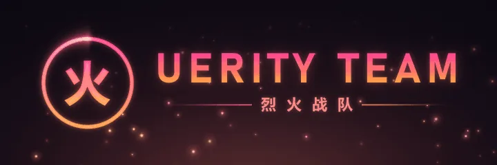
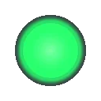

Проверка часов Steam
Бот находит в анкете до трёх ссылок на Steam-профили и пишет в тикете, сколько часов в Rust. Если часов меньше нужного, рядом стоит предупреждение. Скрытый профиль бот тоже отметит.
 По приглашению
По приглашению
Заявки в клан прямо в Discord. Кандидат заполняет анкету, рекрутеры решают одной кнопкой.


Набор открытВы кандидат, который хочет вступить в клан. Нажимайте подсвеченные кнопки в окне Discord ниже. Настоящий бот для этого не нужен.
Откройте меню в сообщении бота и выберите «Подать заявку в клан».
Ники, ответы и числа в демо выдуманные. Так бот выглядит в Discord на сервере клана.
Пять тем на выбор. Тема меняет цвет полоски, баннер и значки в сообщении с заявкой. Её ставит администратор командой /тикет-тема.
Выбрана тема: Закат. Кружок статуса набора у всех тем одинаковый.
Бот находит в анкете до трёх ссылок на Steam-профили и пишет в тикете, сколько часов в Rust. Если часов меньше нужного, рядом стоит предупреждение. Скрытый профиль бот тоже отметит.
Человеку из списка бот отвечает коротко: «Подать заявку на этом сервере нельзя». О причине он не узнаёт. Попытку бот записывает в журнал рекрутеров.
Под заявкой есть кнопки «За» и «Против». Нажать ещё раз значит убрать голос. В заявке видно, кто как проголосовал.
Если рекрутеры долго не отвечают, бот напоминает им прямо в тикете. По умолчанию через 24 часа. Время можно поменять или выключить напоминания.
Перед удалением закрытого канала бот сохраняет всю переписку файлом в журнал. Если сохранить не вышло, канал остаётся на месте.
За 7 дней, 30 дней или всё время: сколько заявок подано, принято и отклонено, среднее время до решения, причины отказов и работа каждого рекрутера.
Заголовок, требования, подсказки и другие тексты в сообщении с заявкой можно поменять. Баннер можно заменить на свою GIF или картинку.
В меню можно подать заявку в клан, предложить сотрудничество или задать вопрос руководству. Последние два работают и при закрытом наборе.
Бот создаёт канал с инструкцией, как найти свой профиль BattleMetrics. Ссылка на этот канал появляется в сообщении с заявкой.
Бот принимает заявки на сервере клана UERITY TEAM. Лидер клана разрешил показать эту работу.
Команды нужны администраторам. Их видят только те, у кого есть право «Управлять сервером». Кандидаты работают с меню в сообщении с заявкой.
/тикет-настройкаГлавная настройка, её делают один раз. Обязательно: роль рекрутеров и категория для каналов-тикетов. По желанию: каналы новостей, BattleMetrics и журнала, роль для принятых, роль руководства, канал чёрного списка и время напоминаний.
/тикет-панельОтправляет в канал сообщение с заявкой: требования, статус набора и меню «Подать заявку».
/наборОткрывает или закрывает набор. Статус в сообщении с заявкой меняется сразу.
/тикет-рольЗадаёт роль, которую бот выдаёт кандидату после кнопки «Принять».
/тикет-темаСтавит тему оформления: Закат, Кровь, Лёд, Токсик или Неон.
/тикет-текстМеняет любой текст в сообщении с заявкой или заменяет GIF. Можно вернуть стандартный вариант.
/тикет-battlemetricsСоздаёт канал с инструкцией, как найти профиль BattleMetrics.
/тикет-чсЧёрный список: добавить человека, убрать или показать список.
/тикет-статаСтатистика заявок за 7 дней, 30 дней или всё время.
/тикет-помощьСправка по командам и кнопкам. Ответ видите только вы.
Публичной кнопки «Добавить» нет. На чужом сервере бот не работает, пока я не открою доступ.
В Discord или Telegram. Расскажите про клан и сервер.
Название, цвета, баннер и требования к кандидатам.
Кандидаты подают заявки в любое время, рекрутеры отвечают, когда удобно.
Напишите в Discord или Telegram и расскажите про клан. Я настрою бота под вас и подскажу, с чего начать.